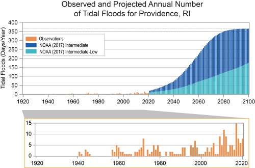

 Our research aims to further develop and produce greener solutions to current energy sources. Whether it is burning fossil fuels or fracking for oil, our environment is struggling under the weight of human induced stressors. In a recent article published by the Geological Survey of Ireland, they also include that, “Fossil fuels are also used in the petrochemicals industry, here the fossil fuels are used to make plastics, paints and even medication.” Fossil fuels are not just limited to energy production and are more involved in our lives than most of us realize. It is imperative that we find alternatives before it is too late. A region struggling heavily from the warming caused by burning fossil fuels is the arctic. Every summer, the ice coverage is lower and lower, providing problems for the people and ecosystems that depend on year round sea ice. NASA released a statement in a recent article claiming that, “Summer Arctic sea ice extent is shrinking by 12.2% per decade due to warmer temperatures.” Although it should be noted that the percentage given is an average rate of change. In recent years that rate has been increasing at an alarming rate due to increased warming around the world. According to a figure in the same article, 30 years ago the arctic had a net area of 6.96 million square kilometers of sea ice extent. Currently that number sits at around 4.28 million square kilometers. That is a 38% decrease in sea ice coverage over a 30 year span or approximately an average decrease of around 12.835% per year in the past year. Although a minute difference the continued increase in rate of loss will render the Arctic Ice free in summers to come. Arctic sea ice isn’t the only thing changing at alarming rates. With increased warming around the world, the increased temperatures in the oceans are causing irreversible damage to the local ecosystems. In a recent EPA study done on Marine Heat Waves, it is mentioned that, “Just like heat waves based on air temperature, marine heat waves are an extreme condition that can severely disrupt marine life. This disruption can cause harm as ocean creatures—particularly those that are stationary, like corals—are not able to escape waters that become too warm to tolerate for an extended period. For example, persistent marine heat wave conditions in the northern Pacific have fed harmful algal blooms that then led to closures in the Dungeness crab fishery and deaths of sea lions.” The first alarming statement is the closing of fisheries. Aquaculture is a major economical crutch for many nations who have an abundance of fish, shellfish or other edible aquatic species. They offer a surplus of jobs and opportunities to individuals, while also producing a sustainable way of sourcing food from the ocean. If fisheries were to shut down on a large scale it would be disastrous for many parties involved. Secondly, coral reefs such as the great barrier reef are massive habitats for millions of different species, some that we eat and others that are paramount to the upholding of the aquatic food web. As these reefs die out, the organisms that rely on them for food or shelter will die as well. When that happens not only will the revenue gained from these beautiful places disappear, but the food that we gain from it will disappear as well. In addition to both sea ice melt and marine heatwaves, the intensity of regional storms is increasing in severity due to the surplus of warm moist air gathering around the equator. As the oceans heat up, evaporation occurs at a higher rate increasing the humidity of the surrounding areas. This is perfect for giving hurricanes and typhoons the fuel they need in order to keep growing in severity, until we don't have a way to stop them. In a recent podcast with NPR radio, Rebecca Hersher asked scientists James Kossin (First Street Foundation) and Micheal Whener (Lawrence Brekely) their opinion on whether or not a Category Six hurricane should be introduced and if so what it would involve. They stated, “Category 5 should include hurricanes with maximum sustained winds of 157 to 192 miles per hour, and that a new Category 6 should include any storm with wind speeds above 192 miles per hour.” Although these parameters seem extreme or impossible, some typhoons have already broken the threshold for being categorized as a Category 6. According to the same article, around 5 storms in the past 11 years qualify for this extreme rating. Although one super storm every two years doesn’t seem like something to worry about, it becomes increasingly terrifying when the fact that previously this was not considered to even be environmentally possible gets brought up. Its only a matter of time before all of these extreme events become yearly, then monthly, then maybe even weekly occurrences. The question is are we as a species going to save ourselves or let greed snuff out life on planet earth entirely?
|
|
|
|
Home |
The Audience |
Challenges |
Sources |